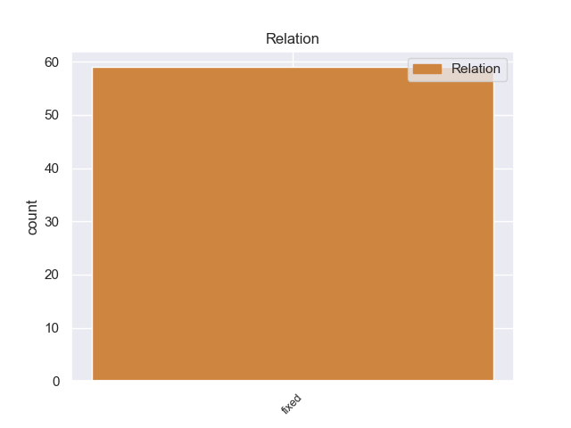
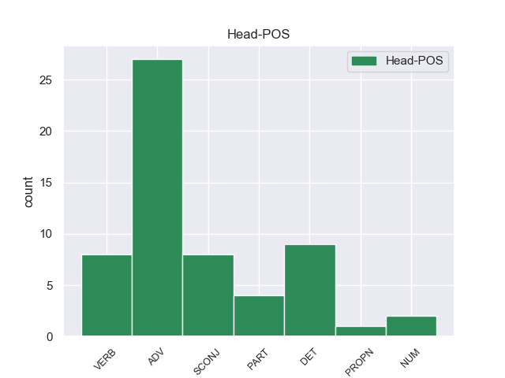
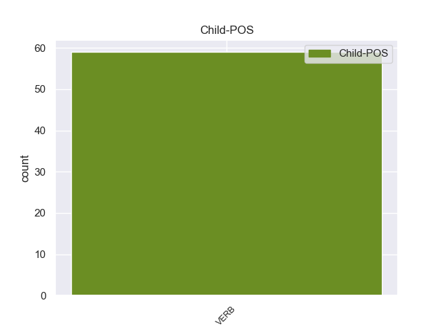

Distribution of features within this leaf



Morphosyntax Rules sorted by frequency.
- When the dependent token is the fixed multiword expression(fixed) of the head token, and the head token is ADV the Tense needs to be Pres.
1 Тем _ _ _ _ 0 _ _ _
2 более более ADV _ Degree=Cmp 0 _ _ _
3 что _ _ _ _ 0 _ _ _
4 выборы _ _ _ _ 0 _ _ _
5 проходят проходить VERB _ Aspect=Imp|Mood=Ind|Number=Plur|Person=3|Tense=Pres|VerbForm=Fin|Voice=Act 2 fixed 2:fixed _
6 раз _ _ _ _ 0 _ _ _
7 в _ _ _ _ 0 _ _ _
8 пять _ _ _ _ 0 _ _ _
9 лет _ _ _ _ 0 _ _ _
10 . _ _ _ _ 0 _ _ _
1 Главным _ _ _ _ 0 _ _ _
2 должен _ _ _ _ 0 _ _ _
3 быть _ _ _ _ 0 _ _ _
4 лозунг _ _ _ _ 0 _ _ _
5 " _ _ _ _ 0 _ _ _
6 Да да PART _ _ 0 _ _ _
7 здравствует здравствовать VERB _ Aspect=Imp|Mood=Ind|Number=Sing|Person=3|Tense=Pres|VerbForm=Fin|Voice=Act 6 fixed 6:fixed _
8 РОССИЙСКАЯ _ _ _ _ 0 _ _ _
9 ФЕДЕРАЦИЯ _ _ _ _ 0 _ _ _
10 - _ _ _ _ 0 _ _ _
11 истинно _ _ _ _ 0 _ _ _
12 демократическое _ _ _ _ 0 _ _ _
13 и _ _ _ _ 0 _ _ _
14 правовое _ _ _ _ 0 _ _ _
15 государство _ _ _ _ 0 _ _ _
16 " _ _ _ _ 0 _ _ _
17 . _ _ _ _ 0 _ _ _
1 Ведь _ _ _ _ 0 _ _ _
2 даже _ _ _ _ 0 _ _ _
3 если _ _ _ _ 0 _ _ _
4 Путина _ _ _ _ 0 _ _ _
5 поймают _ _ _ _ 0 _ _ _
6 на _ _ _ _ 0 _ _ _
7 лжи _ _ _ _ 0 _ _ _
8 , _ _ _ _ 0 _ _ _
9 как _ _ _ _ 0 _ _ _
10 в _ _ _ _ 0 _ _ _
11 случае _ _ _ _ 0 _ _ _
12 с _ _ _ _ 0 _ _ _
13 Сергеем _ _ _ _ 0 _ _ _
14 Гуриевым _ _ _ _ 0 _ _ _
15 , _ _ _ _ 0 _ _ _
16 которого _ _ _ _ 0 _ _ _
17 он _ _ _ _ 0 _ _ _
18 якобы _ _ _ _ 0 _ _ _
19 знать знать VERB _ Aspect=Imp|VerbForm=Inf|Voice=Act 0 _ _ _
20 не _ _ _ _ 0 _ _ _
21 знает знать VERB _ Aspect=Imp|Mood=Ind|Number=Sing|Person=3|Tense=Pres|VerbForm=Fin|Voice=Act 19 fixed 19:fixed _
22 и _ _ _ _ 0 _ _ _
23 которого _ _ _ _ 0 _ _ _
24 ( _ _ _ _ 0 _ _ _
25 как _ _ _ _ 0 _ _ _
26 доказали _ _ _ _ 0 _ _ _
27 блогеры _ _ _ _ 0 _ _ _
28 ) _ _ _ _ 0 _ _ _
29 он _ _ _ _ 0 _ _ _
30 совсем _ _ _ _ 0 _ _ _
31 недавно _ _ _ _ 0 _ _ _
32 величал _ _ _ _ 0 _ _ _
33 по _ _ _ _ 0 _ _ _
34 имени _ _ _ _ 0 _ _ _
35 - _ _ _ _ 0 _ _ _
36 отчеству _ _ _ _ 0 _ _ _
37 , _ _ _ _ 0 _ _ _
38 это _ _ _ _ 0 _ _ _
39 отнюдь _ _ _ _ 0 _ _ _
40 не _ _ _ _ 0 _ _ _
41 скажется _ _ _ _ 0 _ _ _
42 на _ _ _ _ 0 _ _ _
43 его _ _ _ _ 0 _ _ _
44 рейтинге _ _ _ _ 0 _ _ _
45 . _ _ _ _ 0 _ _ _
1 РГ _ _ _ _ 0 _ _ _
2 : _ _ _ _ 0 _ _ _
3 То То PROPN _ _ 0 _ _ _
4 есть быть VERB _ Aspect=Imp|Mood=Ind|Number=Sing|Person=3|Tense=Pres|VerbForm=Fin|Voice=Act 3 fixed 3:fixed _
5 ЕГЭ _ _ _ _ 0 _ _ _
6 и _ _ _ _ 0 _ _ _
7 правда _ _ _ _ 0 _ _ _
8 помогает _ _ _ _ 0 _ _ _
9 бороться _ _ _ _ 0 _ _ _
10 с _ _ _ _ 0 _ _ _
11 коррупцией _ _ _ _ 0 _ _ _
12 ? _ _ _ _ 0 _ _ _
non-conforming Examples:
1 Говорить говорить VERB _ Aspect=Imp|VerbForm=Inf|Voice=Act 0 _ _ _
2 почти _ _ _ _ 0 _ _ _
3 не _ _ _ _ 0 _ _ _
4 говорили говорить VERB _ Aspect=Imp|Mood=Ind|Number=Plur|Tense=Past|VerbForm=Fin|Voice=Act 1 fixed 1:fixed SpaceAfter=No
5 , _ _ _ _ 0 _ _ _
6 редко _ _ _ _ 0 _ _ _
7 только _ _ _ _ 0 _ _ _
7.1 _ _ _ _ _ 0 _ _ _
8 друг _ _ _ _ 0 _ _ _
9 другу _ _ _ _ 0 _ _ _
10 : _ _ _ _ 0 _ _ _
11 " _ _ _ _ 0 _ _ _
12 Посмотри _ _ _ _ 0 _ _ _
13 ! _ _ _ _ 0 _ _ _
14 " _ _ _ _ 0 _ _ _
15 или _ _ _ _ 0 _ _ _
16 " _ _ _ _ 0 _ _ _
17 Послушай _ _ _ _ 0 _ _ _
18 ! _ _ _ _ 0 _ _ _
19 " _ _ _ _ 0 _ _ _
1 Договориться договориться VERB _ Aspect=Perf|VerbForm=Inf|Voice=Mid 0 _ _ _
2 - _ _ _ _ 0 _ _ _
3 то _ _ _ _ 0 _ _ _
4 договорились договориться VERB _ Aspect=Perf|Mood=Ind|Number=Plur|Tense=Past|VerbForm=Fin|Voice=Mid 1 fixed 1:fixed SpaceAfter=No
5 , _ _ _ _ 0 _ _ _
6 а _ _ _ _ 0 _ _ _
7 вот _ _ _ _ 0 _ _ _
8 унификации _ _ _ _ 0 _ _ _
9 не _ _ _ _ 0 _ _ _
10 случилось _ _ _ _ 0 _ _ _
11 . _ _ _ _ 0 _ _ _
1 " _ _ _ _ 0 _ _ _
2 Съесть съесть VERB _ Aspect=Perf|VerbForm=Inf|Voice=Act 0 _ _ _
3 - _ _ _ _ 0 _ _ _
4 то _ _ _ _ 0 _ _ _
5 он _ _ _ _ 0 _ _ _
6 съест съесть VERB _ Aspect=Perf|Mood=Ind|Number=Sing|Person=3|Tense=Fut|VerbForm=Fin|Voice=Act 2 fixed 2:fixed SpaceAfter=No
7 , _ _ _ _ 0 _ _ _
8 да _ _ _ _ 0 _ _ _
9 кто _ _ _ _ 0 _ _ _
10 ж _ _ _ _ 0 _ _ _
11 ему _ _ _ _ 0 _ _ _
12 даст" _ _ _ _ 0 _ _ _
13 ? _ _ _ _ 0 _ _ _
1 Как как SCONJ _ _ 0 _ _ _
2 бы _ _ _ _ 0 _ _ _
3 то _ _ _ _ 0 _ _ _
4 ни _ _ _ _ 0 _ _ _
5 было быть VERB _ Aspect=Imp|Gender=Neut|Mood=Ind|Number=Sing|Tense=Past|VerbForm=Fin|Voice=Act 1 fixed 1:fixed SpaceAfter=No
6 , _ _ _ _ 0 _ _ _
7 смысл _ _ _ _ 0 _ _ _
8 концепции _ _ _ _ 0 _ _ _
9 стабилизационного _ _ _ _ 0 _ _ _
10 фонда _ _ _ _ 0 _ _ _
11 в _ _ _ _ 0 _ _ _
12 том _ _ _ _ 0 _ _ _
13 , _ _ _ _ 0 _ _ _
14 что _ _ _ _ 0 _ _ _
15 нефтедоллары _ _ _ _ 0 _ _ _
16 текущему _ _ _ _ 0 _ _ _
17 росту _ _ _ _ 0 _ _ _
18 российской _ _ _ _ 0 _ _ _
19 экономики _ _ _ _ 0 _ _ _
20 помочь _ _ _ _ 0 _ _ _
21 не _ _ _ _ 0 _ _ _
22 могут _ _ _ _ 0 _ _ _
23 . _ _ _ _ 0 _ _ _
1 Именно _ _ _ _ 0 _ _ _
2 такой _ _ _ _ 0 _ _ _
3 идеологией _ _ _ _ 0 _ _ _
4 проникнута _ _ _ _ 0 _ _ _
5 дорогостоящая _ _ _ _ 0 _ _ _
6 реформа _ _ _ _ 0 _ _ _
7 наземного _ _ _ _ 0 _ _ _
8 транспорта _ _ _ _ 0 _ _ _
9 , _ _ _ _ 0 _ _ _
10 поделившая _ _ _ _ 0 _ _ _
11 городские _ _ _ _ 0 _ _ _
12 маршруты _ _ _ _ 0 _ _ _
13 между _ _ _ _ 0 _ _ _
14 несколькими _ _ _ _ 0 _ _ _
15 избранными _ _ _ _ 0 _ _ _
16 коммерческими _ _ _ _ 0 _ _ _
17 фирмами _ _ _ _ 0 _ _ _
18 и _ _ _ _ 0 _ _ _
19 исключившая _ _ _ _ 0 _ _ _
20 какую какой DET _ Case=Acc|Gender=Masc|Number=Sing 0 _ _ _
21 бы _ _ _ _ 0 _ _ _
22 то _ _ _ _ 0 _ _ _
23 ни _ _ _ _ 0 _ _ _
24 было быть VERB _ Aspect=Imp|Gender=Neut|Mood=Ind|Number=Sing|Tense=Past|VerbForm=Fin|Voice=Act 20 fixed 20:fixed _
25 конкуренцию _ _ _ _ 0 _ _ _
26 между _ _ _ _ 0 _ _ _
27 ними _ _ _ _ 0 _ _ _
28 . _ _ _ _ 0 _ _ _